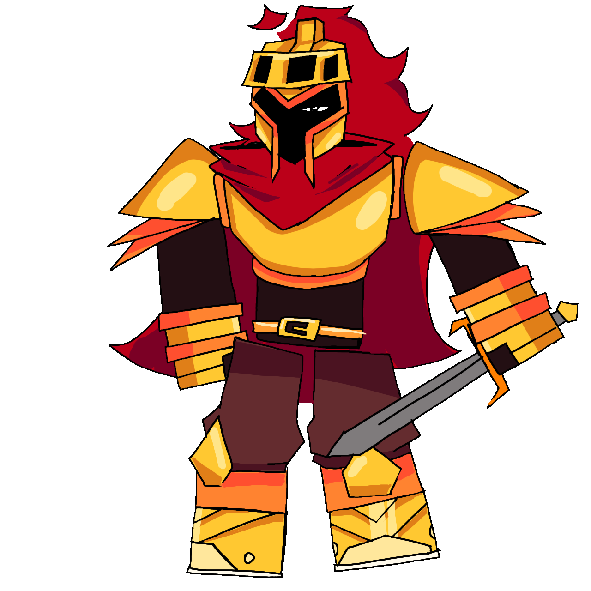

ARCHIVO DE PERSONAJE / DESTKARD
Desconocido
Un caballero de pocas palabras. Su pasado está marcado por una gran hazaña, una traición inesperada y una deuda que todavía busca saldar.
Antes de llegar a Destkard, Shader era un caballero ampliamente reconocido. Su nombre inspiraba respeto y admiración, pues había conseguido una hazaña que parecía imposible: derrotar a uno de los dioses más invencibles de su época, una criatura monstruosa perteneciente a las antiguas leyendas.
Durante aquella batalla, el caballero dorado atravesó el corazón de la bestia con su magnífica espada, poniendo fin a su existencia. Sin embargo, aquella victoria también tuvo un precio. Su hazaña despertó la envidia y el odio de muchos, convirtiéndolo en objetivo de quienes deseaban verlo caer.
Shader nunca permitió que nadie acabara con su vida. Pero su mayor amenaza no llegó de un enemigo.
Un día, recibió la visita de quien había sido su mejor amigo. Este le habló de un antiguo castillo que había descubierto y lo invitó a conocerlo. Después de tanto tiempo sin vivir una aventura, Shader aceptó acompañarlo.
Sin embargo, al llegar al castillo, su compañero quedó detrás de él. En un instante, lo traicionó y atravesó su cuerpo con una espada, alcanzando su corazón.
Shader jamás habría esperado algo semejante. Mucho menos de alguien a quien había considerado su mejor amigo.
El caballero quedó tendido en el suelo del castillo, mientras su vida se desvanecía. Y cuando todo parecía haber terminado, un portal apareció ante él...
Así comenzó un nuevo capítulo en la historia de Shader: su llegada a Destkard.
PERSONALIDAD
Shader es callado, serio y reservado. No suele hablar más de lo necesario y prefiere demostrar quién es mediante sus acciones.
Tiene la personalidad de un héroe veterano: es valiente, disciplinado, protector y posee un fuerte sentido del deber. No busca reconocimiento ni gloria; simplemente hace lo que considera correcto.
Es alguien en quien sus compañeros pueden confiar, incluso cuando las circunstancias parecen estar en su contra.
Shader siente que tiene una deuda con Dest, quien le salvó la vida cuando todo parecía perdido. Desde entonces, busca corresponder a ese acto y permanecer a su lado.
VOCES DE SHADER
Escuchá las distintas voces de Shader.